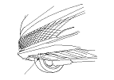

Remolque
|
Acuda a un servicio profesional si es necesario remolcar el vehículo. No remolque nunca el vehículo detrás de otro vehículo con una cuerda o una cadena. Este procedimiento resulta muy peligroso.
Remolque de emergencia
Hay tres métodos muy utilizados para remolcar un vehículo.
Equipo sobre plataforma−
El operario carga el vehículo en la parte trasera de un coche grúa.
Es la mejor forma de transportar el vehículo.
Para el montaje del equipo sobre plataforma, el vehículo dispone de unas ranuras para ganchos de amarre delanteras (A), un gancho de remolque trasero (B) y unas ranuras para los ganchos de amarre traseros (C).
El gancho de remolque trasero puede utilizarse con un cabrestante para tirar del vehículo hacia el camión, mientras que las ranuras de los ganchos de amarre se pueden utilizar para sujetar el vehículo al camión.
Montaje del gancho de remolque delantero
El gancho de remolque delantero desmontable es para operaciones de remolque a corta distancia, tales como la recuperación del vehículo. El gancho se amarra al anclaje del parachoques delantero.

|
Parte delantera:

Parte trasera:
 
|